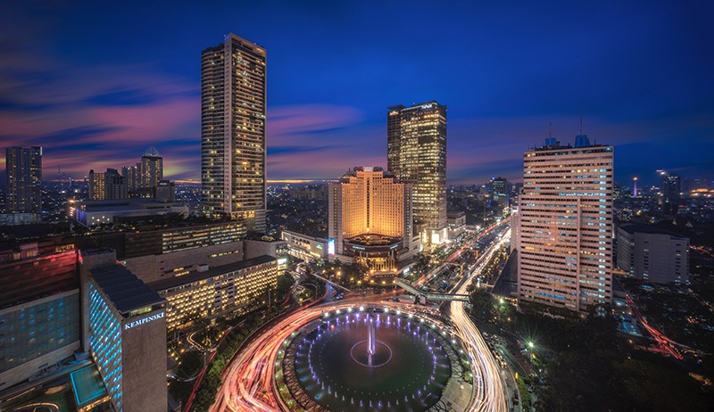
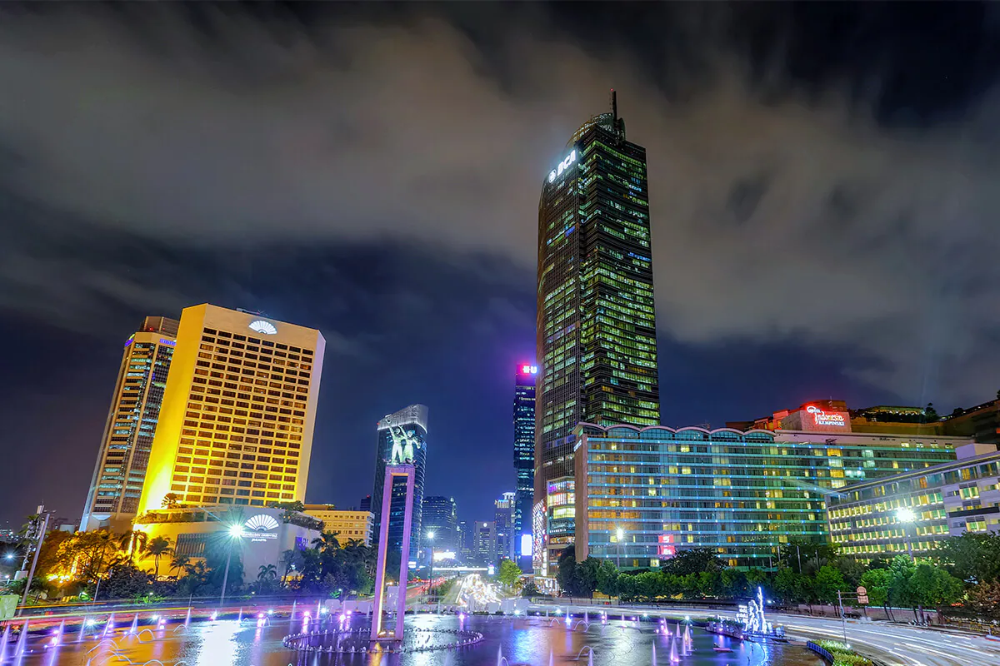
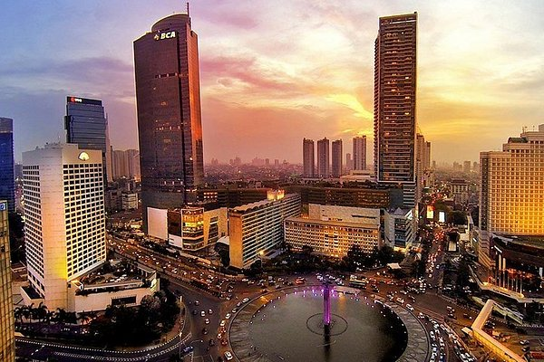

Pada 1511, Portugis memasuki wilayah Malaka. Kemudian pada 1522, wilayah Sunda Kelapa diklaim sebagai bagian dari kekuasaannya. Selang lima tahun kemudian, Fatahillah datang dari Kesultanan Demak untuk mengusir Portugis. Sunda Kelapa berhasil direbut pada 22 Juni 1527 dan diganti namanya menjadi kota Jayakarta. Jayakarta diartikan sebagai kemenangan. Pada 30 Mei 1619, Kota Jayakarta dikuasai oleh Pemerintahan Belanda (VOC) di bawah pimpinan Jan Pieterszoon Coen. Kemudian VOC menghancurkan Jayakarta dan membangun kota baru di bagian barat Sungai Ciliwung yang kemudian dinamakan Batavia, yang diambil dari nenek moyang bangsa Belanda, Batavieren. Pembangunan Batavia didesain layaknya kota-kota di Belanda. Desain bangunan berbentuk blok, masing-masing dipisahkan kanal dan dilindungi benteng dan parit. Pada 1650, Batavia akhirnya selesai dibangun. Bangsa Eropa tinggal di kawasan Batavia, sementara bangsa Cina, Jawa, dan penduduk asli disingkirkan dari wilayah tersebut. Nama Batavia terus dipakai selama tiga abad, yakni mulai 1619 hingga 1942.
  